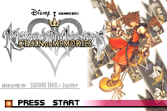

Kingdom Hearts - Chain of Memories (USA)
Stateless / Passcode
Cartridge Identity
- Game Code
B8CE(FamilyB8C)- Header Title
KINGDOMHEART- Maker / Revision
GD/ rev0- ROM Size
- 32.0 MiB (33,554,432 B)
- Save Media
None / Unknown- SHA-256
6f6e7b61bb7b6ef7e2bea6e9dd01e70570a715835cc3713abe86186fd2c4e28d- Engine / SDK Group
comm-001(196 families)
Screenshots

Cartridge Storage Architecture: Stateless / Passcode
Zero non-volatile battery hardware: This cartridge PCB contains ROM only (no SRAM, Flash, or EEPROM chips). Progression is preserved via on-screen passcodes or session-only gameplay. No
.sav file is generated or required.
ROM Assets, Compression & Audio
- BIOS Compression
- LZ77 (
0x10): 0 streams · RLE (0x30): 4 streams - ROM Pointer Tables
- 96 tables (0 pointing to validated compressed streams)
- SDK Backup Tags
SRAM_F_V103
Regional Variants & Revisions (Family B8C)
- Kingdom Hearts - Chain of Memories (Europe) (En,Fr,De,Es,It) (
B8CP, 32 MiB) - Kingdom Hearts - Chain of Memories (Japan) (
B8CJ, 32 MiB)